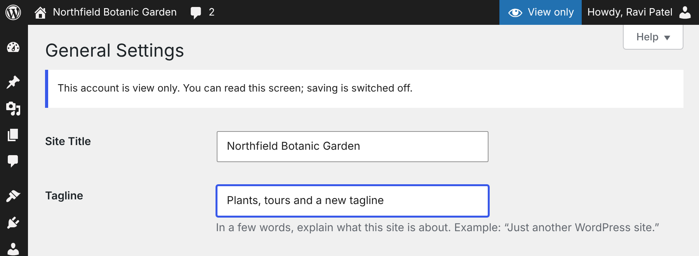
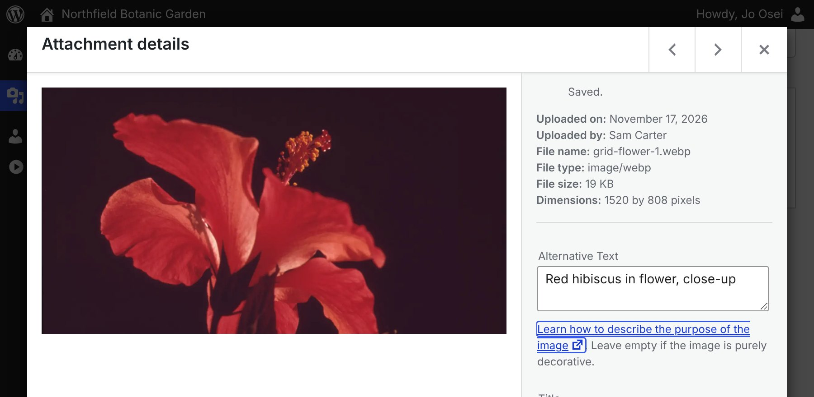
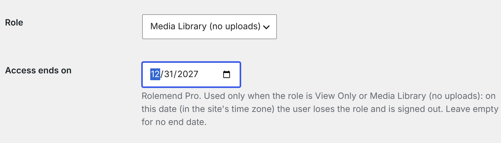

Rolemend for WordPress
Need someone to view your WordPress back end but not edit it, or an SEO person to fix alt text but not upload files?

- View but not edit: drafts listed, saving refused (limits).
- Fix alt text, no uploads: on any photo, shops included.
- Changes nothing else; delete it and the roles go.
Free, both roles: rolemend.zip 1.3.4
Pro, $19 once: Buy for $19
Handing access to a contractor? Pro ends it on a date you choose and undoes their alt-text edits. For a team member or an auditor you don't need Pro: both roles are in the free plugin.
Tested on WordPress 7.1.4 and 6.5.14, PHP 8.3 and 7.4, on Linux · GPL source included · support@ochrestack.com
Above: a View Only user's Posts list (full screen: drafts and private posts listed, no edit links). Pro adds end dates and an undo list for media text (see it); neither role needs Pro. The free zip is 48 KB. How we tested.
Watch both roles
View Only
Sees the screens an Administrator sees for WordPress itself, except Export, Import and the file editors; drafts are listed, not opened. Can save only their own password and Screen Options.

Media Library (no uploads)
Saves Title, Alternative Text, Caption and Description. Uploading, deleting and Edit Image are refused, and their buttons are not shown.


Images already placed in posts keep the alt text they were inserted with; featured images, galleries and shop product photos show the new text.
Does it work with my plugins?
| Plugin tested | Media Library role | View Only |
|---|---|---|
| WooCommerce 11.3.0 | Yes. Opens wp-admin, not My account; the product page shows the alt text it saves. | No WooCommerce menu and no orders. Tools > Scheduled Actions can be read; its Run and Cancel links are greyed out. |
| Yoast SEO 28.8 | Yes. No Yoast screens. | No Yoast menu or settings. |
| GiveWP 4.19.2 | Yes. No GiveWP screens. | No donations or reports; GiveWP has its own Accountant role. |
| Contact Form 7 6.2.5 | Yes. No Contact screens. | No Contact menu and no Settings link on Plugins. |
| Elementor 4.4.1 | Yes. No Elementor screens. | Elementor's Home and four more of its pages open and can be read; their buttons are greyed out, with the reason on top. |
Other plugins' menu entries and toolbar items are left out for both roles unless the plugin uses WordPress's Settings permission, and their Plugins-screen links, Dashboard widgets and admin notices are left out. Other plugins that send people without the Edit Posts permission to an account page are not handled. Gravity Forms was not tested.
Rolemend Pro
- Access ends on: set it on Users > Add User or on the profile; on that date the person loses the role and is signed out, even if nobody remembers.
- Media > Text Changes: every title, alt text, caption and description change by the media role, before and after, with Undo and CSV. The list starts when Pro is activated: install Pro before you give someone the media role.

Add User with Rolemend Pro active: Role set to Media Library (no uploads) and, below it, Access ends on set to 12/31/2027 with the note that it applies when the role is View Only or Media Library (no uploads)" width="807" height="230" loading="lazy">
$19 once, unlimited sites, updates included · needs the free plugin, installed first · checkout by Polar, our payment provider · 14-day refund if it doesn't work as described · not tested on Windows or macOS servers
What it does not lock
- Some plugins can still send an email or save a file when this person opens one of their screens. Rolemend stops them saving anything to your site's database (caches and the person's own settings aside), but not what they do outside it. WordPress's own links, such as Trash or Activate, are refused. A plugin whose save was stopped may still say "Saved". Give the role as you would to anyone who can read your site.
- A few plugins start work before WordPress checks who is signed in, or reach the database by a route of their own. Rolemend cannot stop those.
- What the account can read is readable, including user email addresses and commenter details.
- Drafts are listed by title, author and date, but their text cannot be opened, because WordPress shows a draft only to people who may edit it.
- Tools > Export and the theme and plugin file editors are not available to the role.
- Other plugins' screens show only when they use WordPress's own Settings permission, and a few may load empty. WooCommerce's Tools > Scheduled Actions is one that shows: it can be read, and its Run and Cancel links are greyed out. Other plugins' menu entries, toolbar items, Plugins-screen links, Dashboard widgets and notices, such as WooCommerce's Products and Yoast SEO's menu, are left out; if someone types the address of such a screen, it answers in Rolemend's words. A notice or widget that a plugin adds in an unusual way is not caught.
- Appearance > Editor (Design with a classic theme) opens, but its previews of posts, pages and navigation are empty, because WordPress lists those only for people who may edit them; a notice in the editor says so.
- On other plugins' screens, a link or button that WordPress protects with a hidden check code is refused for both roles, even one that only reads, such as a download link.
- The media role cannot post comments or other front-end forms while signed in.
Details
- Quick start: install, give a role, Pro, updates.
- How we tested: the counts, the versions, how the images and the video were made.
- Privacy: neither plugin contacts any server. A View Only user can read user email addresses and commenter details, so choose who gets the role.
- GPL-2.0-or-later, full source in both zips. Support: support@ochrestack.com.